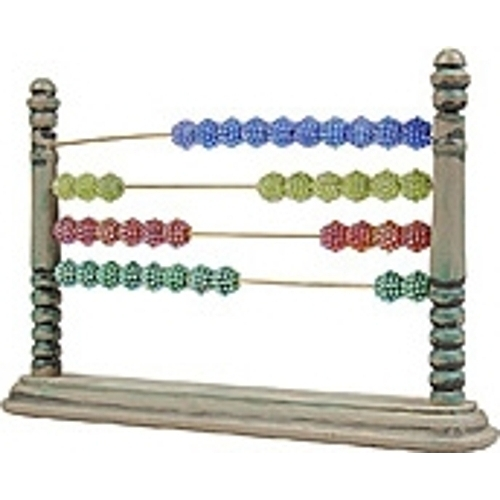
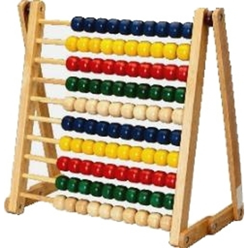
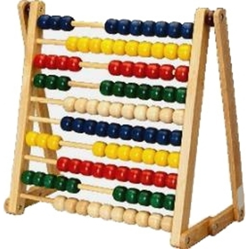
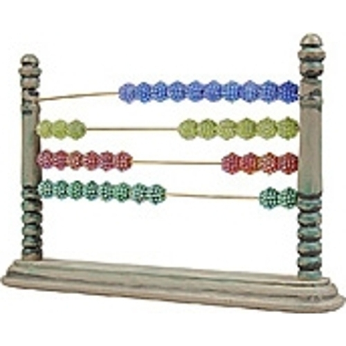
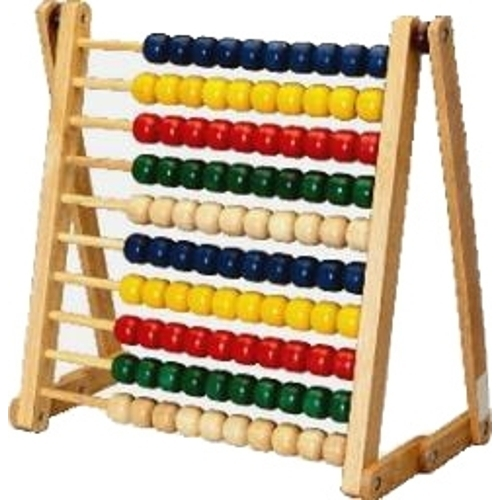
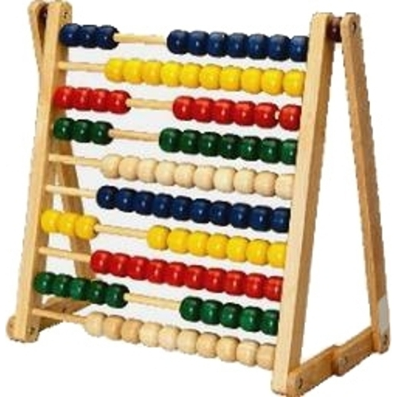

Surprise! There is now a memory test for the objects that you saw previously during the size task.
Say you saw this during the size task:
Your job is to click the one that you saw from among three similar objects.
If you aren't sure, please take your best guess.
Legal information: By answering the following questions, you are participating in a study being performed by cognitive scientists in the Stanford Department of Psychology. If you have questions about this research, please contact Karen LaRocque at klarocqu@stanford.edu or Mike Frank, at mcfrank@stanford.edu. You must be at least 18 years old to participate. Your participation in this research is voluntary. You may decline to answer any or all of the following questions. You may decline further participation, at any time, without adverse consequences. Your anonymity is assured; the researchers who have requested your participation will not receive any personal information about you.
 




